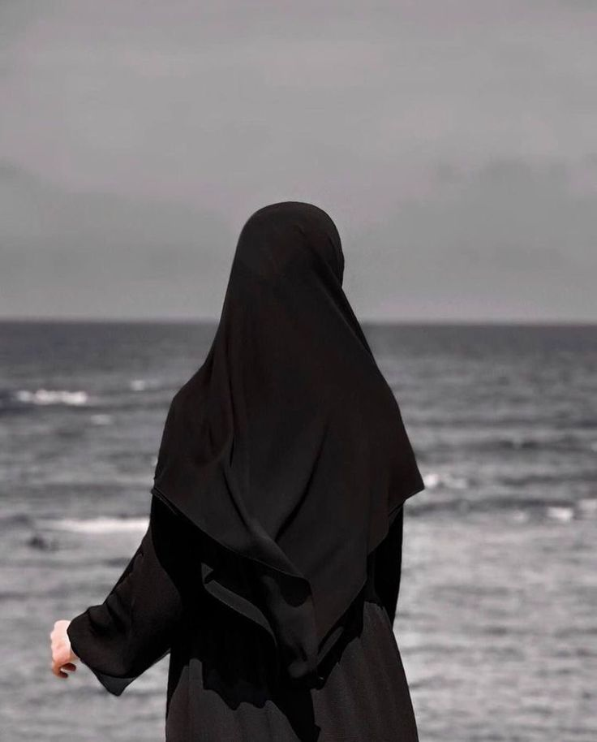
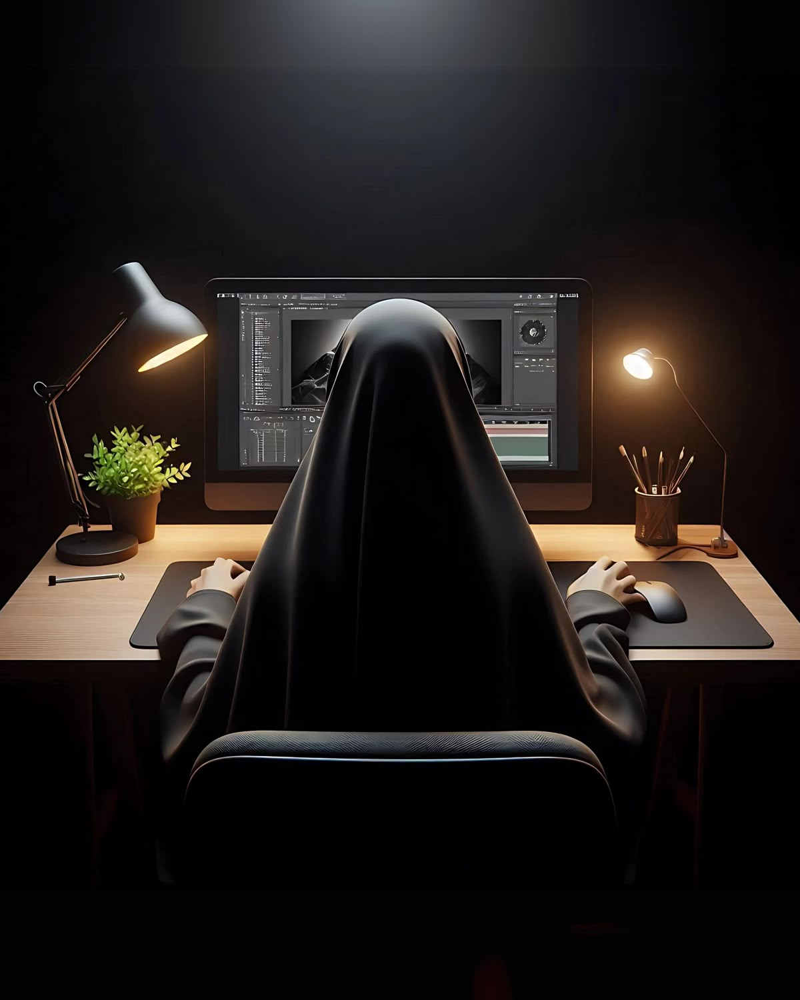
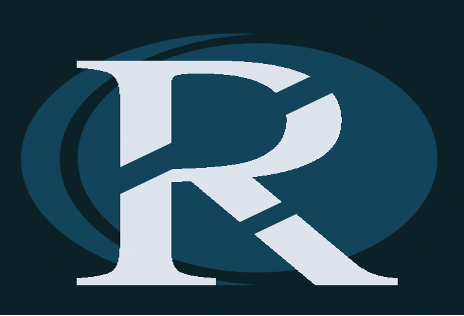
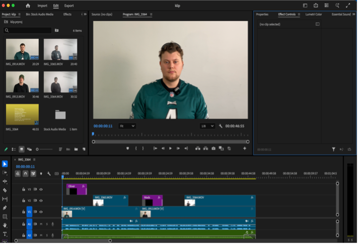
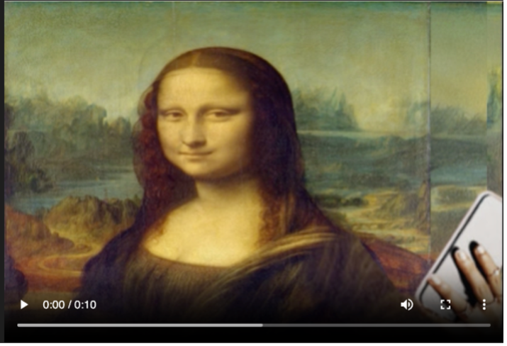
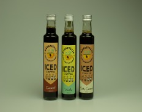
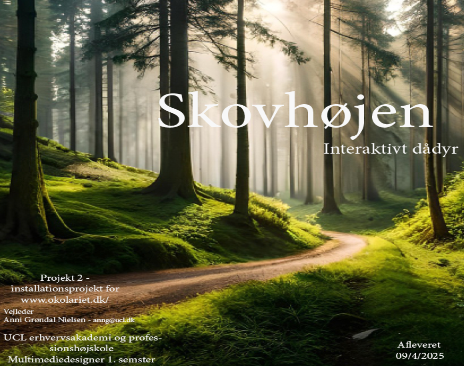
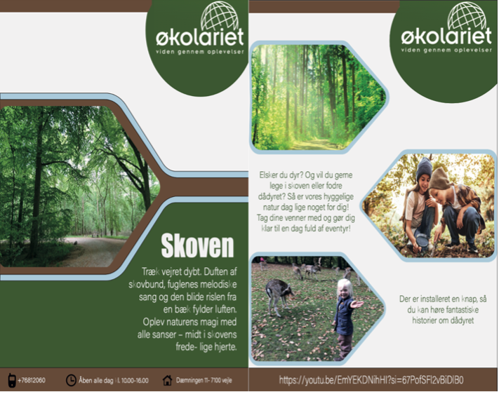

Om mig
Som mig Jeg er studerende på multimediedesigneruddannelsen ved UCL Erhvervsakademi og Professionshøjskole i Odense. Jeg er passioneret omkring design og teknologi og har en stor interesse i at kombinere kreativitet med digital innovation. Uddannelsen giver mig mulighed for at udvikle færdigheder inden for grafisk design, webudvikling, animation, og medieproduktion. Jeg har en nysgerrighed på, hvordan teknologi kan bruges til at skabe visuelle og funktionelle løsninger, der både engagerer og kommunikerer effektivt til målgrupper. Jeg ser frem til at opbygge erfaring gennem praktiske projekter og samarbejde med både medstuderende og professionelle, samtidig med at jeg udvikler mine kompetencer som multimediedesigner. Jeg er altid åben for nye udfordringer og muligheder for at lære og vokse i mit fagområde..
Projekter

Logo photoshop

Klip Premiere Pro

Art

Lightroom Classic

P2 InDesign

Flyer Illustrator